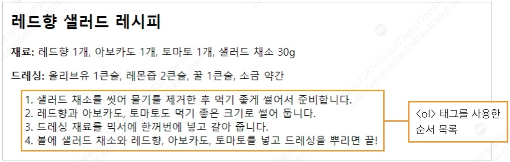
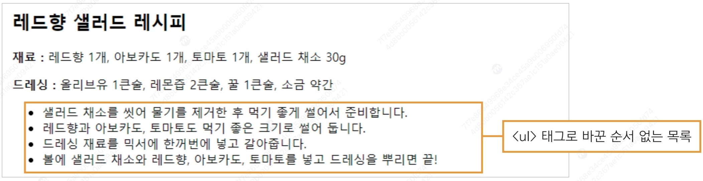
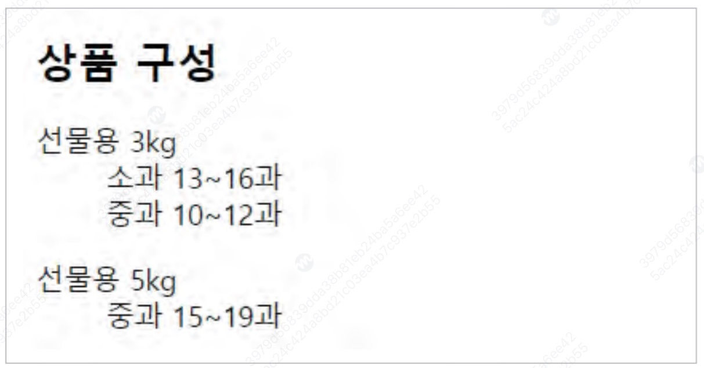
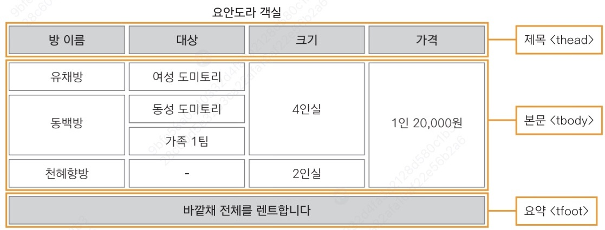

1. <DOCTYPE! html> Tag
<DOCTYPE! html> Tag is used to specify the version of the HTML document. This tag must be placed on the first line of the document,
and for HTML5 version, it is written as <!DOCTYPE html>.
<DOCTYPE! html> Tag is used to specify the version of the HTML document. This tag must be placed on the first line of the document,
and for HTML5 version, it is written as <!DOCTYPE html>.
<html> Tag indicates the start and end of an HTML document. All elements must be contained within this tag.
<head> Tag is used to include metadata about the HTML document. Metadata refers to data about the data.
This includes the title, character encoding, style sheet links, and more.
<meta> Tag is used to include metadata about the HTML document. This includes character encoding, description, keywords, and more.
<title> Tag is the tag that enters the title to be displayed in the browser tab. It also affects search engine results.
<header> Tag is used to indicate the header of a document or section. It is commonly used with a title.
<main> Tag is used to indicate the main content of a document. It contains the primary content of the page.
<section> Tag is used to indicate a section of a document. It is useful for grouping related content.
<article> Tag is used to indicate independent content. It is used for blog posts, news articles, user comments, and more.
<!DOCTYPE html>
<html lang="ko">
<head>
<meta charset="UTF-8">
<title>Document Title</title>
</head>
<body>
<header><h1>Header Title</h1></header>
<main>
<section>
<article><p>Independent Content</p></article>
</section>
</main>
</body>
</html>
Independent Content
from <h1> to <h6> tags are used to indicate headings. The smaller the number, the more important the heading.
h1 to h2 should be used in order of importance, and h1 should be used only once per page.
<h1>Document Title 1</h1>
<h2>Document Title 2</h2>
<h3>Document Title 3</h3>
<h4>Document Title 4</h4>
<h5>Document Title 5</h5>
<h6>Document Title 6</h6>
<p> Tag is used to indicate a paragraph. It is useful for dividing text into multiple paragraphs to improve readability.
<p>First paragraph</p>
<p>Second paragraph</p>
First paragraph
Second paragraph
<br> Tag is used to indicate a line break. It is useful when you want to break a line within a paragraph.
<p>First paragraph</p>
<p>Second paragraph</p>
First paragraph
Second paragraph
<hr> Tag is used to indicate a horizontal rule. It is useful for separating sections or indicating a thematic break in the content.
These days, it is often used for mood shifts in writing.
<hr>
<blockquote> Tag is used to indicate a long quotation. It is useful when quoting someone else's words or text.
<blockquote>제가 지금 작성하는 글은 인용문의 예시입니다. </blockquote>
제가 지금 작성하는 글은 인용문의 예시입니다.
<strong> Tag is used to emphasize text. It is commonly used for important content or urgent notifications.
<b> Tag and <strong> Tag are often confused, but <b> is used to simply make text bold without conveying any additional emphasis.
<strong>Emphasized text</strong>
Emphasized text
<b> Tag is used to make text bold. It is commonly used for making text stand out or for stylistic purposes.
<strong> Tag and <b> Tag are often confused, but <strong> is used to convey additional emphasis.
<b>Bold text</b>
Bold text
<em> Tag is used to display text in italics.
<i> Tag and <em> Tag are often confused, but <em> is used for emphasis while <i> is used for stylistic purposes.
<em>Emphasized text</em>
Emphasized text
<i> Tag is used to display text in italics.
<em> Tag and <i> Tag are often confused, but <em> is used for emphasis while <i> is used for stylistic purposes.
<i>Italic text</i>
Italic text
<cite> Tag is used to indicate the title of a work or source.
For example, it is used to display the titles of books, papers, movies, etc.
<cite>Work Title</cite>
Work Title
<code> Tag is used to indicate computer code.
It is useful for displaying code snippets or command-line instructions.
<code>console.log("Hello, World!");</code>
console.log("Hello, World!");
<abbr> Tag is used to indicate an abbreviation or acronym.
For example, "HTML" is an abbreviation for "HyperText Markup Language".
<abbr title="HyperText Markup Language">HTML</abbr>
HTML
<del> Tag is used to indicate deleted text.
For example, it is used to display content that has been removed from a document.
<del>Deleted text</del>
Deleted text
<ins> Tag is used to indicate inserted text.
For example, it is used to display content that has been added to a document.
<ins>Inserted text</ins>
Inserted text
<mark> Tag is used to highlight text.
It is commonly used to emphasize parts of the text that are relevant to the user's search query.
<mark>Highlighted text</mark>
Highlighted text
<small> Tag is used to indicate small text.
It is commonly used for auxiliary information or copyright notices.
<small>Small text</small>
Small text
<sub> Tag is used to indicate subscript text.
It is commonly used in chemical formulas to represent the number of atoms.
<sub>subscript</sub>
H2O
<sup> Tag is used to indicate superscript text.
It is commonly used in mathematical expressions to represent exponents.
<sup>superscript</sup>
E = mc2



First, as shown in the images above, declare the list and then insert the data inside it.
For more details, refer to the examples below.
<li> Tag is used to indicate an item in a list.
It is commonly used with <ul> or <ol> tags.
<ul>
<li>Item 1</li>
<li>Item 2</li>
</ul>
<ol> Tag is used to indicate an ordered list.
It is commonly used with <li> tags.
<ol>
<li>Item 1</li>
<li>Item 2</li>
</ol>
<ul> Tag is used to indicate an unordered list.
It is commonly used with <li> tags.
<ul>
<li>Item 1</li>
<li>Item 2</li>
</ul>
<dl> Tag is used to indicate a definition list.
A definition list is a list of terms and their corresponding descriptions.
It is commonly used with <dt> (definition term) and <dd> (definition description) tags.
<dt> Tag is used to indicate a definition term in a definition list.
It is commonly used with <dl> and <dd> tags.
<dd> Tag is used to indicate a definition description in a definition list.
It is commonly used with <dl> and <dt> tags.
<dl>
<dt>Term 1</dt>
<dd>Description 1</dd>
<dt>Term 2</dt>
<dd>Description 2</dd>
</dl>
Table is divided into the following parts: table caption, column names, body, and summary.

To create a table like the one in the image above, use the <table> tag. This is the process of declaring a table.
To add a title to the table, use the <caption> tag.
Generally, in Excel, data is entered based on rows and columns, but in HTML, data is entered based on rows, and the columns are automatically adjusted.
For example, 2 x 3 table where you want the bottom-right cell to be empty, you would not include data in the third cell of the second row.
Rows are created with the <tr> tag.
Data is created with the <td> tag.
Detailed explanations are provided below.
<table> Tag is used to indicate a table.
Generally, it is used with the following tags:
<caption> (table caption(title))
<tr> (table row)
<th> (table header)
<td> (table data)
These tags are used together.
<tr> Tag is used to indicate a row in a table.
Generally, it is used with the <table> tag.
The <tr> tag contains <th> or <td> tags.
<th> Tag is used to indicate a header cell in a table.
Generally, it is used within the <tr> tag, and the text is displayed bold and centered by default.
<td> Tag is used to indicate a data cell in a table.
Generally, it is used within the <tr> tag, and the text is left-aligned and not displayed bold by default.
<table style = "border: 1px solid black; border-collapse: collapse;">
<caption>Practice</caption>
<thead>
<tr>
<th style = "border: 1px solid black;">Room Name</th>
<th style = "border: 1px solid black;">Target</th>
<th style = "border: 1px solid black;">Size</th>
<th style = "border: 1px solid black;">Price</th>
</tr>
</thead>
<tbody>
<tr>
<td style = "border: 1px solid black;">Yuchae Room</td>
<td style = "border: 1px solid black;">Female Dormitory</td>
<td style = "border: 1px solid black;" rowspan="3">4-person room</td>
<td style = "border: 1px solid black;" rowspan="4">20,000 KRW per person</td>
</tr>
<tr>
<td style = "border: 1px solid black;" rowspan="2">Dongbaek Room</td>
<td style = "border: 1px solid black;">Male Dormitory</td>
</tr>
<tr>
<td style = "border: 1px solid black;">Family 1 team</td>
</tr>
<tr>
<td style = "border: 1px solid black;">Cheonhyehyang Room</td>
<td style = "border: 1px solid black;">-</td>
<td style = "border: 1px solid black;">2-person room</td>
</tr>
<tfoot>
<tr style = "text-align: center; border: 1px solid black;">
<td style = "border: 1px solid black;" colspan="4">Rent the entire outer building</td>
</tr>
</tfoot>
</table>
| 방 이름 | 대상 | 크기 | 가격 |
|---|---|---|---|
| 유채방 | 여성 도미토리 | 4인실 | 1인 20,000원 |
| 동백방 | 동성 도미토리 | ||
| 가족 1팀 | |||
| 천혜향방 | - | 2인실 | |
| 바깥채 전체를 렌트합니다 | |||
<thead> Tag is used to indicate the header section of a table.
Generally, it is used within the <table> tag, and contains <th> tags for the header rows.
When a table is long and not fully visible, JavaScript can be used to fix the table header while only the body portion is scrollable.
<tbody> Tag is used to indicate the body section of a table.
Generally, it is used within the <table> tag, and contains <tr> tags for the data rows.
<tfoot> Tag is used to indicate the footer section of a table.
Generally, it is used within the <table> tag, and contains <tr> tags for the footer rows.
Similar to the <thead> tag, it can be fixed while only the body portion is scrollable.
<col> tag is used to select columns in the table to specify their width, background color and etc.
<col> and <colgroup> tag must be used right after <caption> tag.
You can use <col> tag inside <colgroup> tag to select multiple columns.
Use to group multiple <col> tag. As written in <col> tag, must be located right after <caption> tag.
Used to put image in html file.
You can use srcset and sizes attributes to provide multiple image sources for different screen sizes or resolutions, improving the performance and user experience of your website.
For example, let's see how <img src="image.jpg" srcset="image1.jpg 300w, image2.jpg 600w" sizes="(max-width: 300px) 100vw, 50vw"> works in DPR x2 device.
Basically, the CSS pixel is the absolute standard unit of measurement in web development.
The size indicated in srcset attribute is physical pixels (Size determined after printing on paper), not CSS pixels.
Size written must be exactly same as the physical size of the image, or else browser will be deceived and may not display the correct image.
The 'sizes' attribute is only used when images in 'srcset' attribute are provided in w(px) size. In other words, when images are provided in x(density), the 'sizes' attribute is ignored(not used).
Thus, in a DPR x2 device with a viewport width of 300 pixels or less, the image will take up 100%(300px) of the viewport width (due to '(max-width: 300px) 100vw, 50vw' condition written in the sizes attribute), and second image (image2.jpg) will be used because 300px(CSS size of the image) * 2(DPR, 2 bulbs per pixel) = 600px(bulbs to light up the image).
When an image with [X (physical size of the file)] px needs to be shown in [Y (CSS size)] px on a DPR x [Z] device, [YZ/X] bulbs will be used to light up one pixel of the image. Therefore, the image with [YZ] px in physical pixels suit the best (One bulb per pixel).
Used to indicate a distinguished content - something like img, object, video etc. file.
<figcaption> tag is used inside the <figure> tag to describe that content.
Used inside the <figure> tag to describe that content.
Used to embed multimedia content such as videos, audio files, or interactive applications into a web page.
Specifies the width of the embedded content.
Specifies the height of the embedded content.
Specifies the URL of the resource to embed.
<object data="../../files/분광분석_노트_기말.pdf" width="50%" height="800"></object>
Used to embed external content such as PDFs, images, or other media files into a web page.
Used for embedding content that is not natively supported by the browser, especially for old browsers.
Specifies the URL of the resource to embed.
Specifies the width of the embedded content.
Specifies the height of the embedded content.
<embed src="../../files/workbgm_everyday(ncs).m4a" controls muted width="300px" height="35px">
Omitted, as embed autoplays its content and is quite annoying.
Used to embed audio content such as music or sound effects into a web page.
It is commonly used for background music, podcasts, or other audio content.
Specifies the URL of the audio file to embed.
Specifies that the browser should display audio controls such as play, pause, and volume.
Specifies that the audio should start playing automatically when the page loads.
Specifies that the audio should loop continuously.
Specifies that the audio should be initially muted.
Specifies whether the audio should be preloaded when the page loads.
Specifies the URL of an image to display while the audio is loading.
Example: poster = "../../files/audio_poster.jpg"
<audio src="../../files/workbgm_everyday(ncs).m4a" controls muted></audio>
Used to embed video content such as movies or animations into a web page.
It is commonly used for video tutorials, promotional videos, or other video content.
Specifies the URL of the video file to embed.
Specifies that the browser should display video controls such as play, pause, and volume.
Specifies that the video should start playing automatically when the page loads.
Specifies that the video should loop continuously.
Specifies that the video should be initially muted.
Specifies whether the video should be preloaded when the page loads.
Specifies the URL of an image to display while the video is loading.
<video src="../../files/sample_video.mp4" controls muted width="640" height="360"></video>
Omitted due to storage constraints.
Used to create hyperlinks to other web pages, files, or resources.
It is commonly used for navigation, linking to external websites, or linking to downloadable files.
Specifies the URL of the page or resource to link to.
Specifies where to open the linked document. Common values are "_blank" (new tab), "_self" (same tab), "_parent", and "_top".
Specifies the relationship between the current document and the linked document. Common values are "noopener", "noreferrer", and "nofollow".
Images can be used as links by wrapping them with an <a> tag.
e.g., <a href="https://www.google.com" target="_blank" rel="noopener"><img src="../../images/Google_G_logo.png" alt="Google" width="100" height="100"></a>
Links can also point to specific sections within the same page using anchor tags.
Anchored tags should have an id attribute that matches the href value.
e.g., <a href="#section2">Go to Section 2</a>
Go to Section 2
<a href="https://www.google.com" target="_blank" rel="noopener">Visit Google</a>